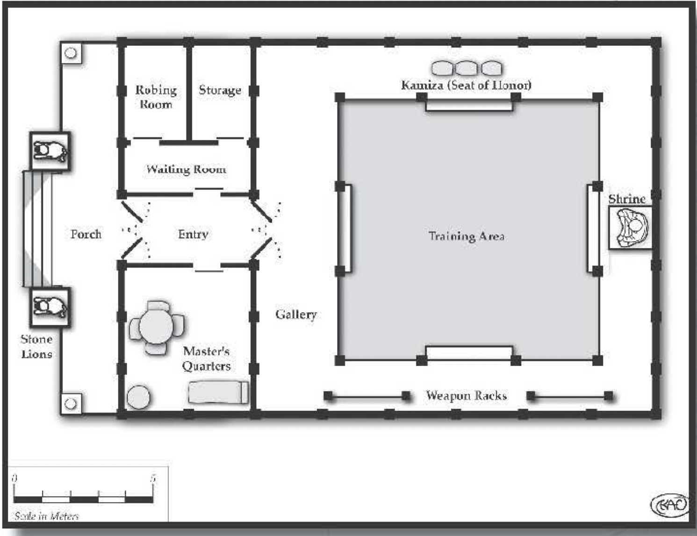

Dojo¶
Although he believes in furthering the causes of good, Okent isn’t prone to displays of spirituality. So when, without provocation, he said, “I have to go this way,” and darted off in an apparently random direction within the bustling seaside town of Inachon’s Point, we followed.
We arrived outside a boxlike building. It stood out against its surroundings by its contradictions: It was, simultaneously, less ornate yet more refined than the neighboring buildings. Lacking the elaborate statues, lanterns, or bright paints of the other shops and homes around it, it should have been completely invisible. But it wasn’t. The building itself was the most refined place of its type I’d ever seen. While the other shops and houses seemed content with serving their functions adequately, this place wanted to be the best … whatever it was. The rich planks of its walls and doors were thin but strong cherrywood, precise and beautifully interlocked. The front entrance had three graceful characters above it, which I transcribed into my notes. We entered and immediately felt at ease as the faint smell of incense infused us.
The entry chamber continued the simple beauty of the exterior, and I realized now that this must be a school of some sort. It had an aura of education; individual mats pointed toward a slate, which had pictographs obviously depicting a small man throwing a bear over his shoulder.
After several minutes, our tranquil study of this place was startled back to reality by the sound of Raichael gasping; we turned to see what caught her attention, and noted a man standing there. He introduced himself as Master Quyen Ota. Seemingly young and vibrant yet with an atmosphere of power and experience, he asked why we had come. Okent explained that he felt compelled to come here.
Quyen nodded, as if this was not in the least bit unusual, and said, “Do you wish training?” Okent paused, struggling to answer. Quyen continued. “I should warn you, however, that the Path of Stone is difficult, and it must only be used for good. You must defend the weak, protect the innocent, and uphold virtue. Are you prepared to do this?”
I guffawed, and others in our party snickered as well. Master Ota might have well asked if the sun had plans on rising in the morning. I caught the teacher’s eye and noted the gleam signifying he understood the rhetorical nature of his own question. Okent himself was smirking, and he nodded in the affirmative.
I asked Master Ota what the markings above the entrance into the building meant. He smiled and said, “Step through this doorway and learn.” I nodded.

Okent’s training mirrored the structure of the dojo itself. He began in the robing room, which was bare save for places to hang normal clothing and two sets of robes. One set of white cotton robes were worn for functional instruction while the other silk set was more ceremonial, although still not overly gaudy. The color of the silk robes denoted the level of training. The red robes indicated a novice, followed by orange, yellow, green, blue, and purple, which signified the highest rank. A sign on the door indicates whether the room is in use. (When asked if women were permitted training from his school, Master Ota replied, “Only hubris would allow an architect to build a house while excluding its walls.” This drew an appreciative nod from Raichael.) We were also introduced to the washroom, which provided private facilities, including a bath.
After Okent changed, Master Ota took him to the nafudakake – a board showing the rankings of all the students, with each name engraved on a thin vertical plank. This board ensured that pupils of roughly equal levels trained against each other, and it gave students something to strive for. Quyen explained that, although there were seven other students listed (three red robes, two oranges, a yellow, and a blue), this was the beginning of a month -long event for his students at a martial arts competition in another place. He frowned as he said it - the first betrayal of his inner calm - but informed us that Okent would be his only student during this period.
A small shelf containing small ceremonial items and an actual bound book was also along the wall. The book, Master Ota told me, was called the Precepts of Stone, and it contained most of his martial teachings. “If such a book were to fall into the wrong hands, “ he said gravely, “the results could be dire.” Grubba asked, “If that’s true, then why isn’t it kept in a vault?” Quyen explained that, to lock away knowledge is to entrap it, which is a dishonor. “Besides,” he said, “As long as I live here, it has a guardian.” While I had little doubt as to the Master’s efficacy, I nevertheless worried: Couldn’t the book be used to train an army with the might of Master Ota, but without his discipline and honor?
And then we were led to the training room. This served as our primary residence for the next few weeks, becoming our domicile and Okent’s chamber of beatings. (At least, that’s how it seemed to me.) This room consisted of a huge padded area, a storage closet containing additional training supplies, and a small shrine along one wall devoted to the spirit of stone. Lighting usually came in from overhead through a translucent paper ceiling, although in times of inclement weather, the roof was covered and we used lanterns inside.
MASTER OTA
Master Ota: Agility 4D+2, acrobatics 5D+2, dodge 5D+2, fighting 7D+2, melee combat 6D+1, Coordination 2D+2, Physique 2D+2, lifting 3D, running 3D, stamina 3D, Intellect 2D, scholar: teaching 5D, Acumen 2D, investigation 3D+1, Charisma 2D, command 2D+2, mettle 4D. Advantages: Fame (R1), , Disadvantages: Devotion (R3), to the Path of Stone; Enemy (R2), foes of his school, Special Abilities: Ambidextrous (R1), + 1 to select skill totals when using two hands; Combat Sense (R1), -2 to surprise modifier; Fast Reactions (R1), +1D to initiative and 3 extra actions per adventure; Hardiness (R1), +1 to damage resistance total; Pain Tolerance (R1), ignore effects of 1 level of injury, Move: 10, Strength Damage: 2D, Fate Points: 1, Character Points: 10, Body Points: 28.
Once Okent’s training began, I was surprised to see that Master Ota wore the same red robes as an initiate. When I asked him why this was, he answered, “The true master knows that he is but a novice. The more he learns, the more he knows that he knows nothing.”
The mat, I discovered, consisted of modular segments that could be changed to simulate different conditions or situations. The standard flooring was tightly woven straw, which provided ample padding. During the course of the month, however, we watched Okent train on many types of mats and surfaces:
A gigantic silk sheet covering the entire floor, making it treacherous and slippery.
A grid of crisscrossing bamboo, about a half meter off the ground. The gaps in the bamboo force the combatants to stay focused, lest their feet fall into the empty squares and put their ankles at risk.
A large valley formed by wooden segments and spanning the entire area. Extending two meters off the ground at each side, this training method forces students to be aware of slanted surfaces and height differences.
A balance beam positioned three meters off the ground, with the usual objective being to knock the opponent to the padded floor. At first, Okent believed this was solely to train him in balance and to fight along a line. But late in his training - and in a moment of clarity - he swung underneath the beam, using his momentum to carry him under and over the beam, knocking Master Ota off. The Master was impressed and greatly pleased, noting that a true master of the martial arts does not limit himself to preconceived notions or self-imposed limits, outside of those dictated by honor.
In addition to simulating different environments with the mats, Master Ota trained Okent in various conditions, including being blindfolded , having the arms or legs restrained, and fighting while both combatants hold the same pole - the goal is to get your opponent to let go.
After several weeks, I was surprised to learn that the paper ceiling was not entirely for light, as Okent and Quyen sparred on the roof. The object was to not get knocked through the ceiling … or, if you were, to avoid bruising one’s posterior as much as one’s pride . Okent’s final match, to determine his level of mastery, involved a dizzying three-tier battle: The balance beam was hoisted to the roof, and Okent and Quyen started atop it, battling to the rooftop, through the ceiling, to the mat below, and eventually sparring into the entrance antechamber before Master Ota, appearing pleased, called the match over.
Finally, after a month, Okent was presented with a yellow robe in a formal ceremony. “You are permitted to resume your journey whenever you like;” Master Ota said, “and your name shall remain on the nafudakake.”
As we left that noble school, I noticed - for the first time - the characters above the doorway leading outside. I smiled, realizing they were the same as those leading in: “Step through this doorway and learn.”
Martial Arts in D6 Fantasy¶
Training in any martial arts is represented by the fighting or melee weapons skill, depending on whether the martial art is armed or unarmed. The specific martial art is not a specialization of the skill; rather, that is simply how the combat skill manifests in the character. However, specific maneuvers are permissible as specializations, such as fighting grab. These should generally represent particular aspect of a martial art in which the character is particularly skilled, and they cannot thus be purchased without having the base skill; it’s difficult to justify how a character knows how to do a Judo tackle without knowing any other aspects of the style.
Supplemental aspects of martial arts are represented by other skills, usually acrobatics or dodge, although some skills - such as climbing or stamina - can be gained because of martial arts training. In addition, many noncombat features of a style can justify other skills, such as healing or stealth.
For moderately cinematic games, many Special Abilities are appropriate. These include: Ambidextrous, Combat Sense, Fast Reactions, Hardiness, Iron Will, Pain Tolerance (see the related sidebar), and Skill Bonus.
For wildly cinematic games, other Special Abilities can be purchased to represent truly super -skilled aspects of the character’s training. These include: Armor-Defeating Attack, Hypermovement, Invisibility, Natural Hand-to-Hand Weapon, Paralyzing Touch, Silence, and Skill Minimum. Most – if not all – of these abilities are onJy available at low levels; the character isn’t truly becoming invisible, but rather using his incredible steal th abilities to be unseen by even the most skilled eyes.
New Special Ability: Pain Tolerance
The character is, for whatever reason, resistant to the effects of pain. This doesn’t keep her from becoming damaged, but it does prevent some of the supplemental effects of injury. For each level, the character ignores the effects of one level of injury. Thus, a character with this at Rank 3 would ignore the effects of Stunned, Wounded, and Severely Wounded. At Rank 5, the highest level available, the character ignores all penalties up to and including Mortally Wounded; she can continue acting at full capacity until she is dead. Character creation cost 2.
Players and gamemasters are encouraged to be creative for these kind of powers. For example, a character might purchase Plight (R1) with Restricted (R2), to require physical contact with roughly horizontal surfaces (for a combined cost of 4). This would represent the ninja-like ability to run on water or other surfaces that wouldn’t seem to support a Human’s weight.
Although cinematic martial arts abilities can confer Special Abilities, they are usually balanced by Disadvantages. Many martial artists take on vows forsaking monetary attachments (Debt and/or Poverty), find themselves under attack by their school’s foes (Enemy). and usually take on the code of honor and conduct taught by the school (Devotion). Those who do not have any such restrictions are often called “ronin; which marks themas those with the martial knowledge but not the responsibility (usually resulting in Infamy among the school’s other members).
Note that this is the most basic method of including martial arts in games. Gamemasters may devise their own, including creating packages of skills and Special Abilities; designing special maneuvers with their own difficulties and effects; and so on.